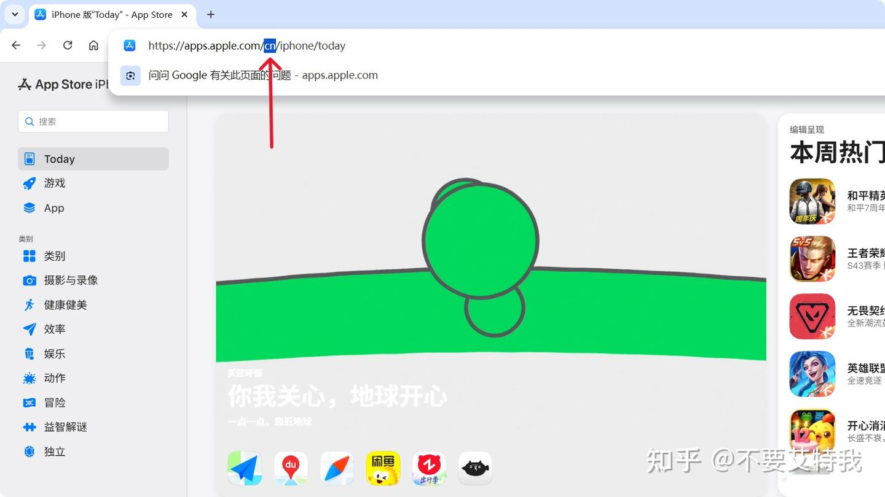
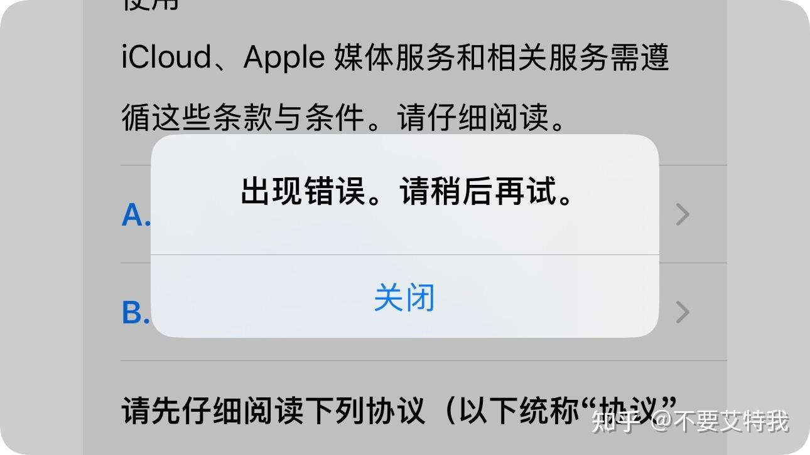
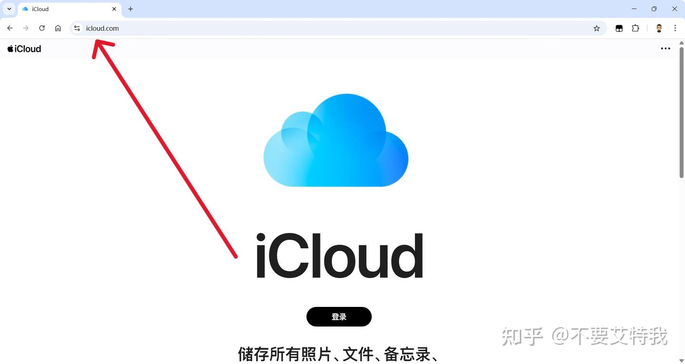
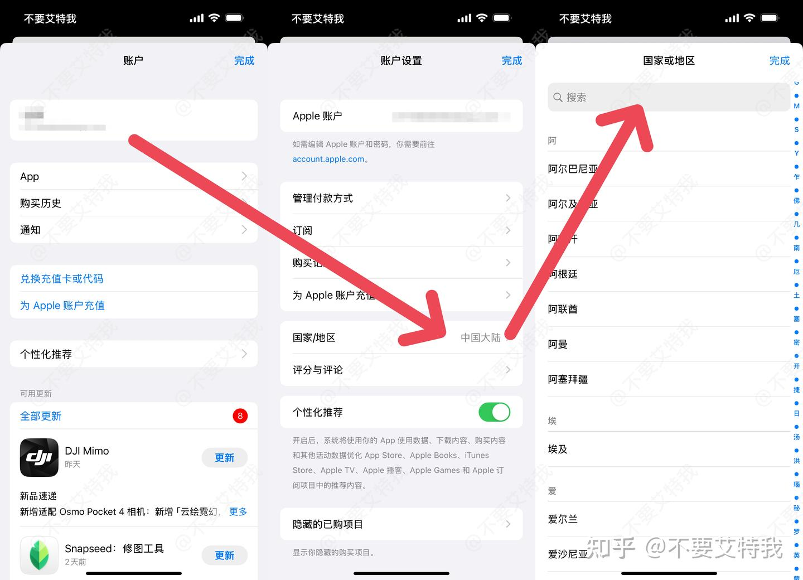
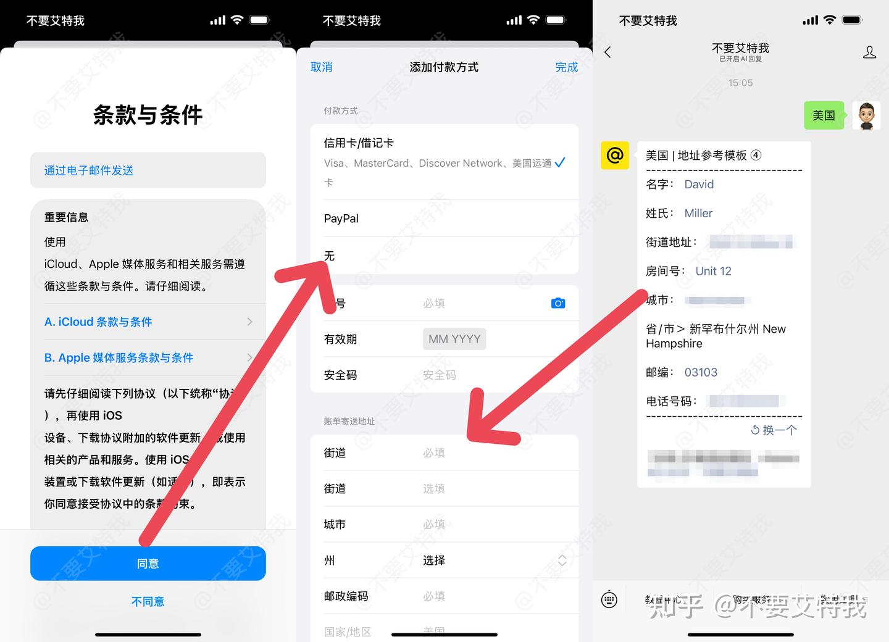

原文：https://www.zhihu.com/tardis/jm/art/2030568958005351764 · 归档于 2026-08-10T06:27:33.392Z
最近折腾外区 Apple ID 的朋友们，是不是感觉快被苹果的风控机制逼疯了？
说实话，苹果最近对外区账号的打压简直是步步紧逼、越收越紧。
先是在注册环节到处设坑，很多小白好不容易弄出个号，一登录 App Store 直接无情被“送回国区”；接着又在“修改地区”上大做文章，各种锁死修改通道；最离谱的是，现在连直接通过网页浏览其他地区商店的口子都被封禁了，硬生生拉起了一道数字高墙！（之前通过修改网址地区代码就可以浏览）

不过大家别慌，魔高一尺道高一丈。只要规则还在，我们就一定有应对的办法。本教程发布于 2026 年 4 月 23 日，截止发稿本教程依然有效，如有勘误欢迎指正，本教程会持续更新。
今天咱们就来解决一个当下最让人头疼的问题：新号被“送中”后，改区一直提示“出现错误”怎么办？
很多小伙伴发现自己的新账号变成国区后，第一反应就是去 App Store 里面或者苹果官网尝试把地区改回美区/日区。但结果往往是，无论你怎么点，系统都会无情地弹出一个提示：“出现错误。请稍后再试。”
这时候很多人以为是网络问题，于是赶紧切换至对应 IP，结果发现改完依然是同样的报错弹窗。这其实是苹果为了防止改区而设置的一道“系统级死锁”。

想要打破这个死锁，直接硬刚是不行的，我们需要利用一个官方的“后门”。
具体操作步骤如下：
1、打开电脑或手机的 Safari 浏览器，直接访问苹果 iCloud 的官方网页版。切记，绝对不要去你 iPhone 的“设置”里登录这个账号，这会导致你的手机数据与这个高风险账号绑定，后患无穷。
在网页端输入你那个被“送中”、且改区报错的 Apple ID 进行登录。这个动作的本质，是唤醒并确认你的账号在苹果云端的基础活跃状态。
iCloud2、在网页版 iCloud 登录成功后，你再回到 App Store 里面，或者去苹果官网的账号管理页面，再次尝试“修改地区”。你会神奇地发现，那个恶心的报错弹窗消失了，你可以顺利进入下一步了！



利用网页版 iCloud 确实能帮你解开“出现错误。请稍后再试。”的弹窗拦截，但这只是成功了一半。
最关键的一步在于：
当你进入修改地区页面，需要填写目标地区（比如美国）的账单地址和邮编时，你的网络 IP 必须已经切换到了该地区！ 如果你不改 IP（继续用国内网络）去填这些地址，你会发现强制绑定付款方式，即使你资料填得再完美，点击“保存”的那一下也是绝对无法成功的，系统会一直卡住或者提示保存失败。
总结一下核心连招：
网页 iCloud 登录解开死锁 -> 全局切换目标区 IP -> 填写对应区账单地址并保存。
学会这一套，你的外区账号就能原地满血复活。赶紧去试试吧，如果弄好了，记得回来在评论区报个喜！